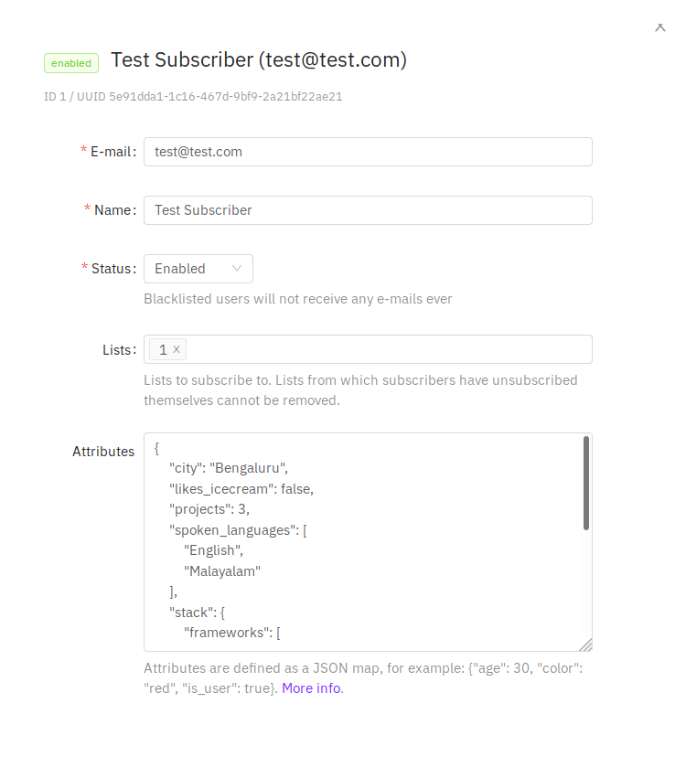
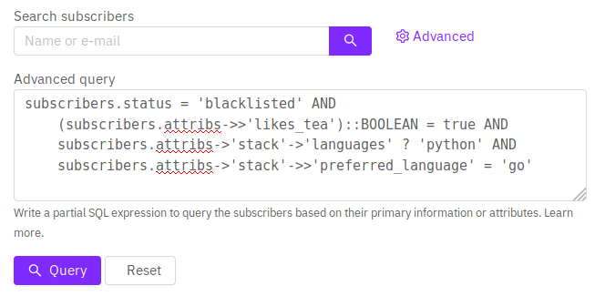

Querying and segmenting subscribers¶
List Pocket supports two ways to segment subscribers:
- Visual filters (recommended) — build conditions on tags, attributes, status, email/name/phone, and list membership without writing SQL.
- SQL expressions — partial SQLite
WHEREfragments for power users (requires thesubscribers:sql_querypermission).
Visual filters¶
On the Subscribers page, open Filters and add conditions. Conditions in the main group are combined with AND. Use Add OR group when any of several conditions should match.
Supported fields:
| Field | Examples |
|---|---|
| Tag | Has any / all / none of selected tags (attribs.tags) |
| Attribute | Equals, contains, exists, numeric comparisons on JSON keys (including dotted paths like stack.preferred_language) |
| Email / name / phone | Equals, contains, starts with, ends with |
| Status | Is / is not enabled, disabled, or blocklisted |
| List | In / not in selected lists |
Filters are sent to the API as a structured filters JSON payload and compiled server-side into parameterized SQL. They do not require the SQL permission.
Example filters payload¶
{
"logic": "and",
"rules": [
{ "field": "tag", "op": "has_any", "value": ["vip"] },
{ "field": "attrib", "key": "city", "op": "eq", "value": "Bengaluru" },
{
"logic": "or",
"rules": [
{ "field": "email", "op": "contains", "value": "@acme.com" },
{ "field": "attrib", "key": "company", "op": "eq", "value": "Acme" }
]
}
]
}
Database fields (SQL)¶
These are the fields in the subscriber database that can be queried with raw SQL.
| Field | Description |
|---|---|
subscribers.uuid |
The randomly generated unique ID of the subscriber |
subscribers.email |
E-mail ID of the subscriber |
subscribers.name |
Name of the subscriber |
subscribers.status |
Status of the subscriber (enabled, disabled, blocklisted) |
subscribers.attribs |
Map of arbitrary attributes represented as JSON (use SQLite JSON1 functions). |
subscribers.created |
Timestamp when the subscriber was first added (exposed as created_at in the API) |
subscribers.updated |
Timestamp when the subscriber was modified (exposed as updated_at in the API) |
Sample attributes¶
Here's a sample JSON map of attributes assigned to an imaginary subscriber.
{
"city": "Bengaluru",
"likes_tea": true,
"spoken_languages": ["English", "Malayalam"],
"projects": 3,
"tags": ["vip", "demo-booked"],
"stack": {
"frameworks": ["echo", "go"],
"languages": ["go", "python"],
"preferred_language": "go"
}
}

Sample SQL query expressions¶
Raw SQL is available under Filters → SQL for users with the subscribers:sql_query permission.

Find a subscriber by e-mail¶
-- Exact match
subscribers.email = 'some@domain.com'
-- Partial match to find e-mails that end in @domain.com.
subscribers.email LIKE '%@domain.com'
Find a subscriber by name¶
-- Find all subscribers whose name start with John.
subscribers.name LIKE 'John%'
Multiple conditions¶
-- Find all Johns who have been blocklisted.
subscribers.name LIKE 'John%' AND subscribers.status = 'blocklisted'
Querying subscribers who viewed the campaign email¶
-- Find all subscribers who viewed the campaign email.
EXISTS(
SELECT 1 FROM campaign_views
WHERE campaign_views.subscriber_id = subscribers.id
AND campaign_views.campaign_id = <put_id_of_campaign>
)
Querying attributes (SQLite JSON1)¶
-- Find subscribers in Bengaluru with more than 3 projects.
json_extract(subscribers.attribs, '$.city') = 'Bengaluru'
AND CAST(json_extract(subscribers.attribs, '$.projects') AS REAL) > 3
Querying nested attributes¶
subscribers.status = 'blocklisted'
AND json_extract(subscribers.attribs, '$.likes_tea') = 1
AND EXISTS (
SELECT 1
FROM json_each(json_extract(subscribers.attribs, '$.stack.languages'))
WHERE value = 'python'
)
AND json_extract(subscribers.attribs, '$.stack.preferred_language') = 'go'
Querying tags¶
-- Has any of these tags:
EXISTS (
SELECT 1
FROM json_each(COALESCE(json_extract(subscribers.attribs, '$.tags'), '[]')) jt
WHERE lower(trim(CAST(jt.value AS TEXT))) IN ('vip', 'demo-booked')
)
To learn more about JSON expressions, see SQLite’s JSON1 extension (PocketBase uses SQLite under the hood).